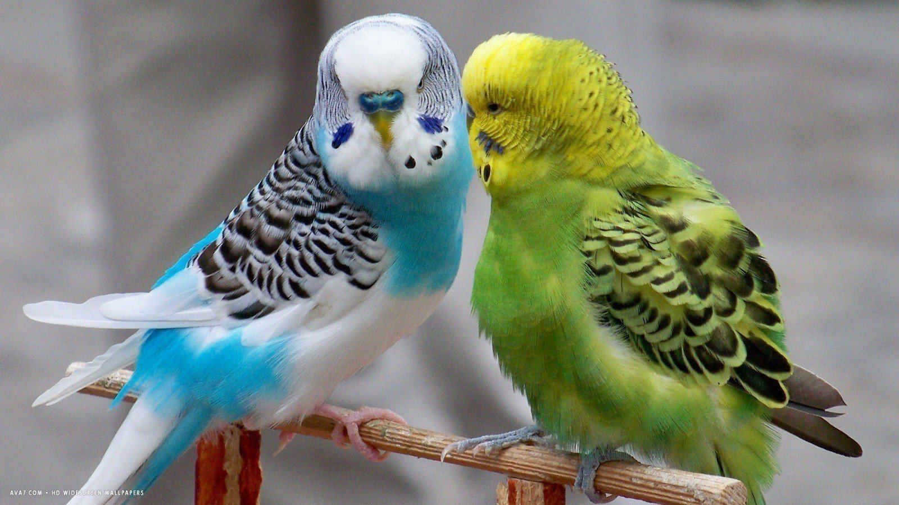

Discover the Amazing World of Birds
Welcome to our sanctuary of peaceful chirps and avian care. Here we help you understand how to raise healthy, happy pet birds at home.

Why Keep Birds at Home?
Birds bring natural beauty, cheerful songs, and a sense of tranquility to any household. Keeping them is a rewarding and relaxing hobby.
- Provide a balanced diet containing seeds, fresh greens, and vitamins.
- Maintain a clean cage regularly to prevent health issues.
- Ensure your pet gets adequate space for safe movement.